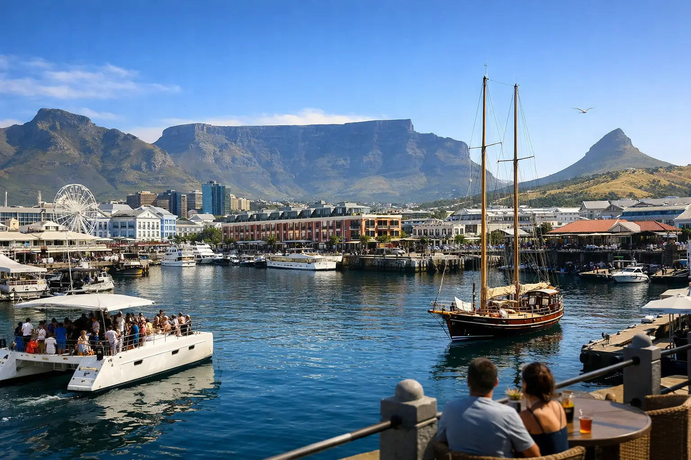
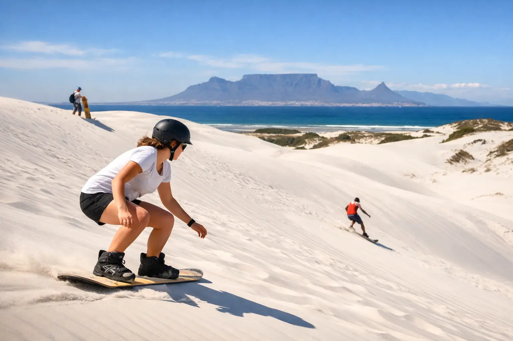
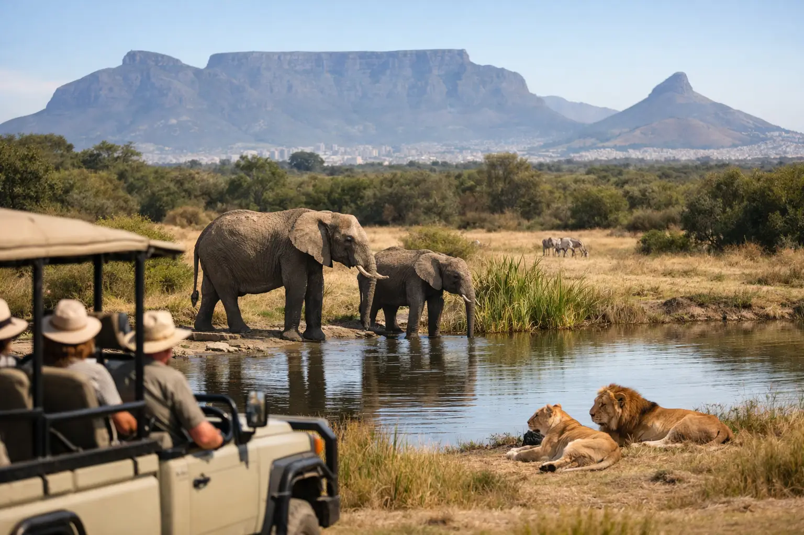
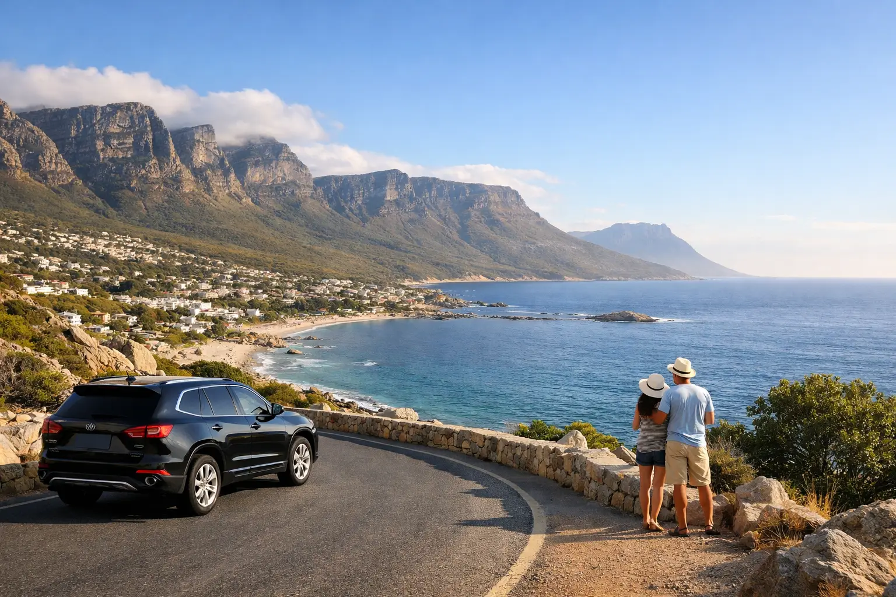

Travel guides
Plan your trip properly
Practical local advice on timing, routes, weather and what things actually cost — written by the people who drive them every week.
All articles
22 guides to the Cape
-

Corporate Travel Itinerary for Cape Town Teams
Plan a corporate travel itinerary in Cape Town with reliable transport, smart timing, team-friendly experiences, and flexible group coordination and support.
-

8 Best Wine Estates Paarl Visitors Should Try
Plan a memorable Cape Winelands day with the best wine estates Paarl has to offer, from historic cellars and food pairings to scenic vineyard views today.
-

Private Versus Shared Excursions: Which Fits?
Compare private versus shared excursions in Cape Town, from hotel pickup and pacing to cost, comfort, and customization, so you can book with confidence.
-

How to Plan a Table Mountain Cableway Visit
Plan a smooth Table Mountain cableway visit with weather tips, ticket timing, accessibility advice, viewpoints, and transport options from Cape Town today.
-

Stellenbosch versus Franschhoek Tastings
Compare Stellenbosch versus Franschhoek tastings by wine style, scenery, travel time, food, and pace, then plan the Cape Winelands day that fits you best.
-

Kruger National Park Tours From Cape Town
Compare Kruger National Park tours from Cape Town, including flights, transfers, safari lengths, lodge choices, and the best way to plan your trip well.
-

Corporate Group Transport Cape Town, Done Right
Corporate group transport Cape Town teams can rely on: safe, flexible coaches, expert local coordination, hotel pickups, and memorable group days, too.
-

Garden Route Private Tour From Cape Town
Plan a Garden Route private tour from Cape Town with tailored stops, comfortable transfers, wildlife, coastlines, and time for the moments that matter.
-

Cape Town Waterfront Tour for a Perfect Day
Plan a Cape Town waterfront tour with hotel pickup, port views, local highlights, timing tips, and flexible private or shared transport options with ease.
-

Chapman's Peak Drive Tour: What to Expect
Plan a Chapman's Peak drive tour with scenic stops, route tips, timing, safety advice, and Cape Peninsula highlights for a comfortable day out safely.
-

Cape Town to Stellenbosch Transfer Options
Plan a comfortable Cape Town to Stellenbosch transfer with pickup options, travel times, luggage guidance, and winelands stops tailored to your schedule.
-

Cape Town City Tour Table Mountain Guide
Plan a Cape Town city tour Table Mountain stop with practical timing, cableway tips, scenic routes, and flexible options for travel groups in Cape Town.
-

Sandboarding Atlantis Sand Dunes Made Simple
Plan sandboarding Atlantis sand dunes with practical advice on timing, transfers, what to wear, safety, and how to build it into a Cape Town day trip.
-

Boulders Beach Penguin Tour for Cape Town Visitors
Plan a Boulders Beach penguin tour with practical timing, viewing tips, Cape Peninsula stops, and transport advice for a relaxed day from Cape Town today.
-

Atlantis Sand Dunes Quad Biking Near Cape Town
Plan Atlantis sand dunes quad biking from Cape Town with practical tips on timing, safety, what to wear, and choosing a guided dune experience safely.
-

Cape Town Safari Tour Day Trips Worth Taking
Plan a Cape Town safari tour with realistic travel times, Big Five reserve options, hotel pickup advice, and practical tips for a rewarding wildlife day.
-

Cape Point Tours for a Full Cape Peninsula Day
Plan Cape Point tours with scenic coastal stops, penguins, flexible pickup times, and local guidance for a comfortable full-day Cape Town outing today.
-

Cape Town Private Tours That Fit Your Day
Cape Town private tours turn limited vacation time into a well-planned day of coastal views, wine estates, wildlife, and hotel-to-hotel comfort throughout.
-

Cape Winelands Wine Tour for a Great Day
Plan a Cape Winelands wine tour with cellar tastings, scenic valleys, relaxed lunch stops, and reliable hotel-to-hotel transport from Cape Town in comfort.
-
Garden Route Tours Worth Taking From Cape Town
Plan Garden Route tours with the right timing, wildlife stops, scenic drives, and comfortable transport from Cape Town for a relaxed South African trip.
-

Cape Town Sightseeing Tours That Make Time Count
Plan Cape Town sightseeing tours with hotel pickup, trusted guides, scenic routes, wildlife stops, Winelands tastings, and flexible private options today.
-

Cape Town Airport Transfers for a Better Arrival
Plan Cape Town airport transfers with reliable pickup, local drivers, vehicle options, and practical arrival advice for a relaxed start in the Cape.
Get started
Read enough? Let us drive.
Open seven days a week, 07:00 to 23:30. Most quotes come back the same day.